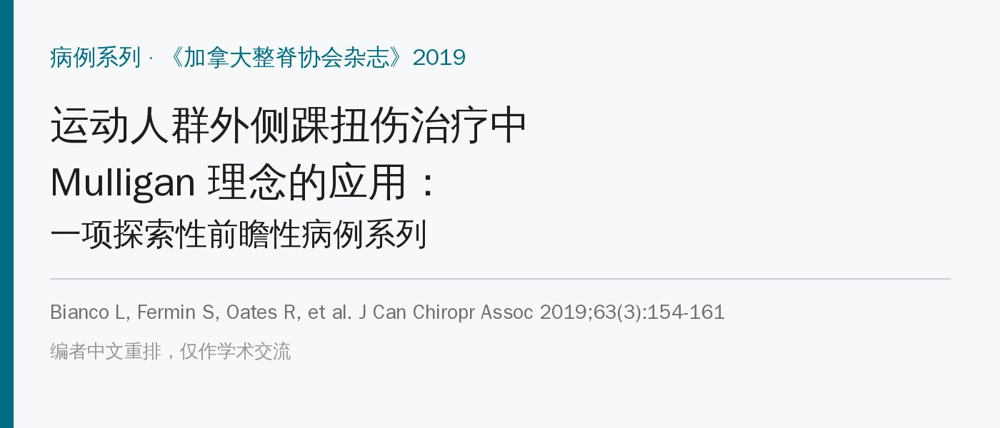
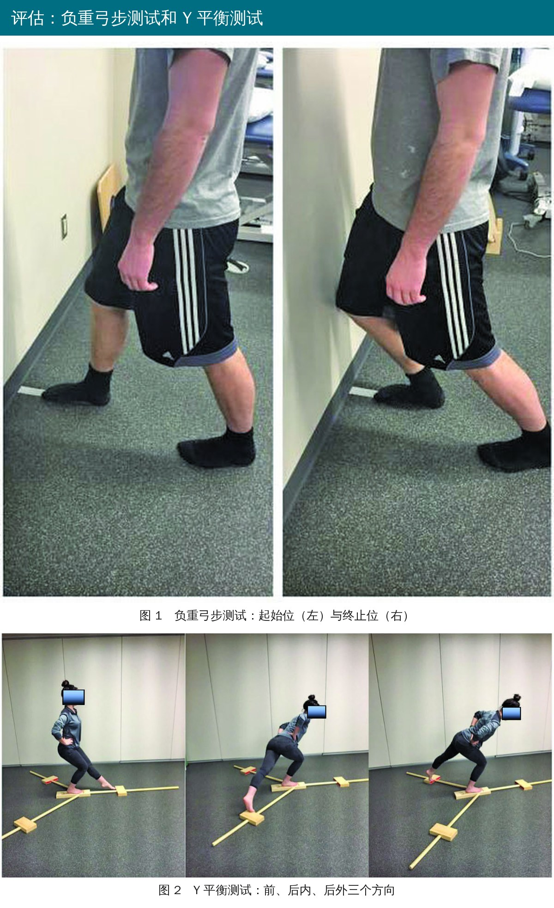
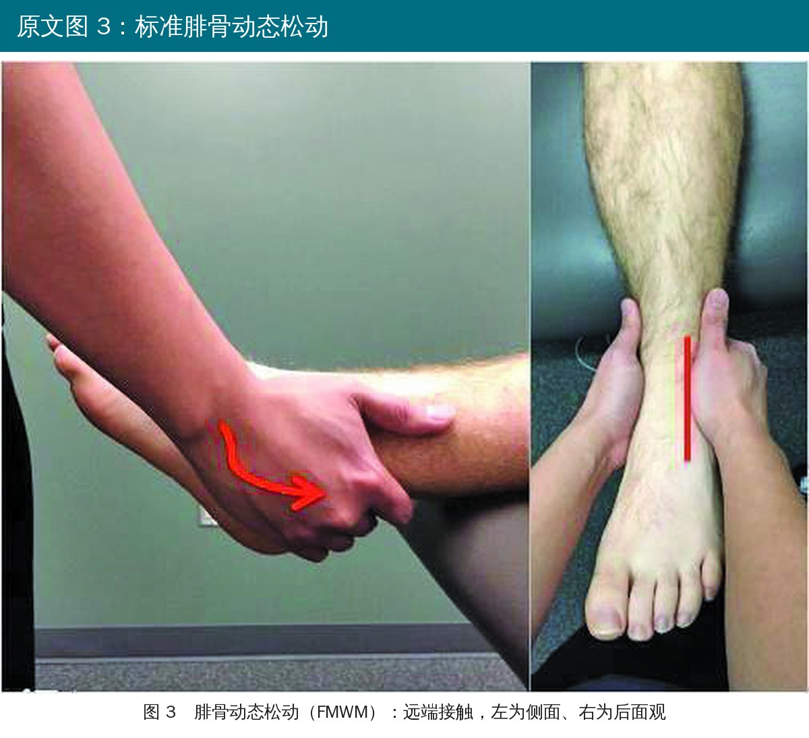
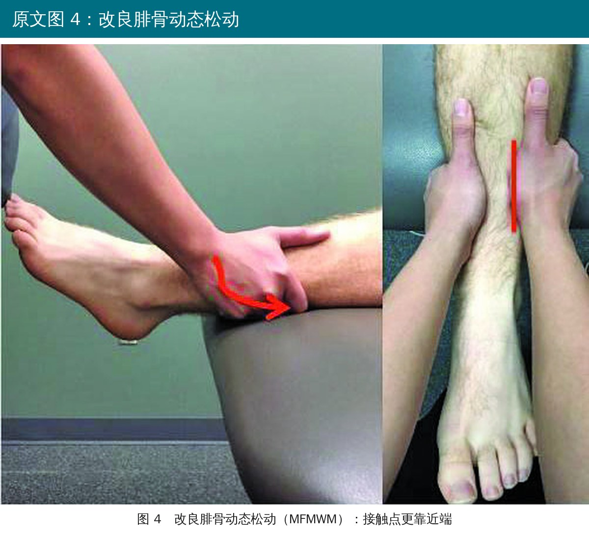
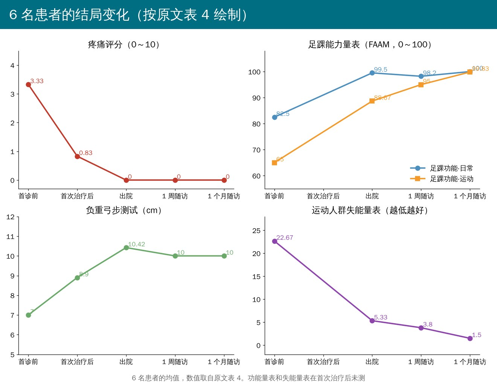

🔖原文信息（编者中文重排）
📚 文献信息
▪ Bianco L, Fermin S, Oates R, May J, Cheatham SW, Nasypany A. Use of the Mulligan concept in the treatment of lateral ankle sprains in the active population: an exploratory prospective case series. J Can Chiropr Assoc. 2019;63(3):154-161.
▪ 作者来自美国朗伍德大学、爱达荷大学等，均为运动防护师背景
▪ 探索性前瞻性病例系列，6 名患者，无对照组
外侧踝扭伤的常规处理以“保护、休息、冰敷、加压、抬高”加牵伸、理疗和练习为主，核心是等组织愈合。Mulligan 理念则认为，扭伤后腓骨远端可能向前错位（一种假设中的“位置错误”），用动态关节松动（MWM）把腓骨推回去，症状和功能可能比组织愈合来得更快改善。
这篇就是在 6 名一度急性外侧踝扭伤的运动人群身上，试用两种非负重位的腓骨动态松动，看看效果。
• 对象：18～40 岁、每周运动 ≥ 150 分钟、受伤 3 天内就诊、一度外侧踝扭伤（轻微肿胀和压痛，几乎不影响功能，没有关节不稳）
• 排除：下肢骨折、高位（下胫腓）或内侧踝扭伤、近 12 个月下肢手术、外侧韧带明显松弛
• 评估：疼痛评分、患者特定功能量表、足踝能力量表、整体变化评分、运动人群失能量表，以及负重弓步测试和Y 平衡测试
• 治疗者完成了 Mulligan 下肢课程，后来也取得了 Mulligan 认证

🔖原文图 1、2：负重弓步测试（测踝背伸）和 Y 平衡测试（测动态平衡）

🔖原文图 3：标准腓骨动态松动。左为侧面，右为从后面看，红线为接触位置

🔖原文图 4：改良腓骨动态松动，接触点比图 3 更靠近端
• 体位：非负重，患者坐或躺在治疗床上，小腿伸出床沿
• 标准腓骨动态松动（FMWM）：治疗师手掌根接触腓骨远端（外踝），把腓骨远端向后、向上滑动，纠正假设中的“前移”
• 改良腓骨动态松动（MFMWM）：滑动方向相同，但接触点更靠近端，放在腓骨干上
• 选择规则：所有人先试标准版，3 次尝试内达到“无痛、即刻、持久”就继续用；3 次都不行就换改良版
• 结果：3 人用标准版、3 人用改良版
需要说明的是，原文没有写患者在松动同时做什么主动动作、每次做几组几次，这些恰恰是动态关节松动的关键参数，读者没法照着精确复现。
• 治疗期间不参加运动，日常活动照常
• 其中 3 人在受伤当天做了一次约 5 分钟的冰敷、加压、抬高止痛
• 出院标准：疼痛 ≤ 2 分；失能量表 ≤ 23 分；足踝能力量表日常 ≥ 90、运动 ≥ 80；Y 平衡两侧差 ≤ 4 cm；负重弓步两侧差 ≤ 1.5 cm

🔖6 名患者的结局变化（按原文表 4 绘制）
• 第一次治疗后：疼痛从 3.3 降到 0.8，超过最小临床重要差异；功能量表、负重弓步、Y 平衡都有改善
• 出院：平均 2.33 次治疗、2.83 天就达到出院标准、无限制回到运动
• 随访：1 个月时改善都还保持着
• 作者对比的是：一度扭伤一般要 11.86～20 天才能重返赛场
• 只有 6 个人、没有对照：一度扭伤本来就恢复得快，很难说多少是手法、多少是自然恢复
• “11.86～20 天”的比较不对等：拿别的研究里的重返赛场时间做对照，人群、标准都不一样
• 治疗者自己评估：没有盲法，期望效应和测量偏倚都可能存在
• 手法参数不全：没写主动动作、次数和组数，不能复现
• 出院标准偏松：失能量表 ≤ 23 分这条，入组时平均分（22.67）就已经达标了
• 疼痛的最小临床重要差异引用的是慢性疼痛研究，套用到急性扭伤上不一定合适
• 性别人数对不上：摘要写 4 男 2 女，表 1 却是 5 男 1 女
• 治疗次数对不上：摘要和讨论说“3 次治疗后约 3 天回到运动”，结果和表 5 是平均 2.33 次、2.83 天
• 随访时间三种说法：结果写“1 个月和 3 个月随访”，讨论写“1 周和 1 个月”，另一处又说测量时间是“治疗前、治疗后、出院和 1 个月”；表 4 里是 1 周和 1 个月
• 冰敷说法自相矛盾：先说受伤后 48 小时内用了加压、抬高和冰敷，接着说“没有对患者使用冰敷，也没有刻意不用”，然后又说 3 名患者做了约 5 分钟冰敷；局限性里还写了“多模式干预”
• 表 4 的“差值”算不对：例如负重弓步 1 个月时从 10 到 10，差值却写 0.42；失能量表从 3.8 到 1.5，差值写 3.83；足踝能力量表运动分从 88.67 到 95，差值写 0.83
• 不可能的标准差：1 个月时疼痛评分写成“0 ± 0.37”，疼痛分不会是负数，均值为 0 时标准差只能是 0
• 入组时测“整体变化评分”：这个量表评的是“和之前比变化多少”，入组时测出 1.33 ± 2.34 没有意义
• Y 平衡是否达到最小可测变化：讨论说负重弓步和 Y 平衡都达到了，但表 4 只给负重弓步标了记号；表中 Y 平衡还被写成了“YBC”，表头“MDC”写成“MCD”，失能量表出院值后面多了“cm”
• 手法描述不通：标准版写成把腓骨远端“从前上向后”滑动，方向表述混乱
• 一度外侧踝扭伤早期可以试腓骨动态松动：非负重位，把腓骨远端向后上推；标准接触不行就把接触点往近端挪
• 用“无痛、即刻、持久”判断：3 次尝试内没有明显改善就换方法，不要硬做
• 用客观指标复查：负重弓步、Y 平衡、疼痛和功能量表，治疗前后对比
• 这只是 6 例病例系列，不能证明手法优于常规处理；二度以上扭伤、有不稳或骨折可能的，先按常规排查
• 早期活动和功能训练仍然是踝扭伤康复的主线，手法可作为加速症状缓解的辅助
表 1 患者基本情况、受伤情况和使用的手法
| 患者 | 年龄 | 性别 | 起病 | 就诊时间 | 受伤机制 | 手法 |
|---|---|---|---|---|---|---|
| 1 | 19 | 男 | 急性 | < 24 小时 | 非接触 | 标准版 |
| 2 | 21 | 男 | 急性 | < 24 小时 | 非接触 | 标准版 |
| 3 | 22 | 女 | 急性 | < 24 小时 | 接触 | 改良版 |
| 4 | 19 | 男 | 急性 | 48～72 小时 | 非接触 | 标准版 |
| 5 | 19 | 男 | 急性 | < 24 小时 | 接触 | 改良版 |
| 6 | 21 | 男 | 急性 | < 24 小时 | 非接触 | 改良版 |
表 2 踝扭伤分级
| 分级 | 描述 |
|---|---|
| 一度（轻度） | 轻微肿胀和压痛；几乎不影响功能；没有机械性关节不稳 |
| 二度（中度） | 受累结构中度疼痛、肿胀和压痛；关节活动部分受限；关节稳定性轻至中度受损 |
| 三度（重度） | 韧带完全断裂，明显肿胀、出血和压痛；功能丧失；关节活动和不稳明显异常 |
表 3 纳入与排除标准
| 纳入标准 | 排除标准 |
|---|---|
| 18～40 岁 | 下肢急性骨折 |
| 每周运动 150 分钟 | 下胫腓或内侧踝扭伤 |
| 3 天内完成评估和分级 | 近 12 个月内下肢手术 |
| 一度外侧踝扭伤 | 外侧踝韧带明显松弛 |
表 4 从入组到出院再到 1 个月随访的结局（* 达到最小临床重要差异，** 达到最小可测变化）
| 指标 | 入组 | 首次治疗后（差值） | 出院（差值） | 1 周随访（差值） | 1 个月随访（差值） |
|---|---|---|---|---|---|
| 疼痛评分 | 3.33 ± 1.03 | 0.83 ± 1.33（2.5*） | 0 ± 0（3.33*） | 0 ± 0（0） | 0 ± 0.37（0） |
| 功能量表-弓步 | 6.5 ± 0.84 | 8 ± 1.26（1.5） | 9.67 ± 0.82（3.17*） | 9.83 ± 0.37（0.17） | 10 ± 0（0） |
| 功能量表-Y 平衡 | 6.33 ± 0.82 | 7.5 ± 1（1.2） | 9.67 ± 0.83（3.33*） | 9.83 ± 0.37（0.17） | 10 ± 0（0） |
| 负重弓步（cm） | 7 ± 3.1 | 8.9 ± 3.35（1.9） | 10.42 ± 3.06（3.42**） | 10 ± 2.78（0.42） | 10 ± 2.80（0.42） |
| Y 平衡（cm） | 81.78 ± 11.15 | 85.3 ± 6.9（3.5） | 88 ± 9.53（6.25） | 87.7 ± 8.2（0.33） | 89.2 ± 6.3（1.21） |
| 失能量表 | 22.67 ± 9.7 | 未测 | 5.33 ± 9.5（17.33*） | 3.8 ± 5.4（1.5） | 1.5 ± 3.4（3.83） |
| 整体变化评分 | 1.33 ± 2.34 | 未测 | 6 ± 0（4.67*） | 6.2 ± 0.4（0.17） | 7 ± 0（1） |
| 足踝能力-日常 | 82.5 ± 14.27 | 未测 | 99.5 ± 0.8（17*） | 98.2 ± 3.7（1.7） | 100 ± 0（3.5） |
| 足踝能力-运动 | 65 ± 23 | 未测 | 88.67 ± 14.14（23.67*） | 95 ± 5（0.83） | 99.83 ± 0.37（4） |
数字照原文录入，原文的错误见上文。功能量表-弓步、功能量表-Y 平衡指患者对完成该测试的主观功能评分。
表 5 出院情况
| 患者 | 治疗次数 | 出院所需天数 |
|---|---|---|
| 1 | 2 | 3 |
| 2 | 2 | 2 |
| 3 | 2 | 2 |
| 4 | 2 | 2 |
| 5 | 3 | 5 |
| 6 | 3 | 3 |
欢迎关注悦美力公众号，获取更多物理治疗的专业知识！
📄参考文献：
Bianco L, Fermin S, Oates R, May J, Cheatham SW, Nasypany A. Use of the Mulligan concept in the treatment of lateral ankle sprains in the active population: an exploratory prospective case series. J Can Chiropr Assoc. 2019;63(3):154-161.
原文版权归加拿大整脊协会杂志（© JCCA 2019）所有，未标注开放许可协议。本文为学术交流用的中文解读：图 1～4 引自原文（标注改为中文），结局变化图为编者按原文表 4 绘制，表格为编者翻译。版权归原作者与期刊，如有侵权请联系删除。